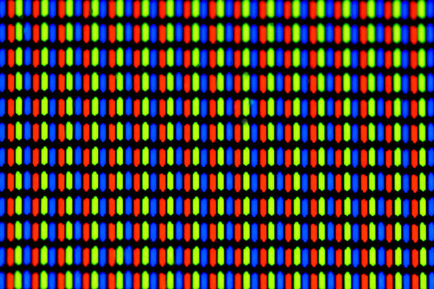
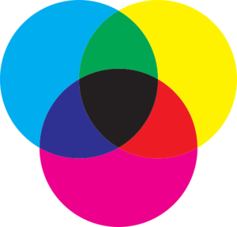

A atuação do olho no RGB esta diretamente relacionado as celulas cones, que são dividas em 3 tipos.
Cones R (Longo): Cone sensível ao vermelho (564-580 nm).
Cones G (Médio): Cone sensível ao verde (534-545 nm).
Cones B (curto): Cone sensível ao azul (420-440 nm).
Essas 3 células são as responsaveis tanto por captar as cores como também por causar problemas como o daltonismo.
Pixel: Um pixel (Picture Element) é a menor unidade de uma imagem digital. Representando um ponto de cor em uma tela, e quando se combinam, formam uma imagem em um monitor.
O Pixel é composto com 3 subpixels, com as cores, vermelho, azul e verde, que quando combinados, podem formar todas as outras cores. Cada subpixel tem uma intensidade de cor que varia de 0 até 255.
Aposto que vocês já que a resolução de tal monitor é Full HD (1920x1080) isso significa que uma tela com essa resolução tem 2.073.600 pixels.
CMYK é um sistema substrativo, ou seja, tudo aquilo que é impresso.C representa Ciano Na sigla CMYK, C representa Ciano, M representa Magenta, Y significa yellow (amarelo), Representa a cor preta, que é a cor Key.
Quando essas cores são misturas em diferentes proporções, elas formam uma ampla gama de tons.
| Característica | RGB (Digital) | CMYK (Impressão) |
|---|---|---|
| Tipo | Aditivo (soma luz) | Subtrativo (remove luz) |
| Cores primárias | Vermelho, Verde, Azul | Ciano, Magenta, Amarelo, Preto |
| Usado para | Telas (monitores, celulares, TV) | Impressoras (jornais, revistas, cartazes) |
| Branco | Máxima luz (255,255,255) | Ausência de tinta (cor do papel) |
| Preto | Ausência de luz (0,0,0) | Máxima tinta (K 100%) |